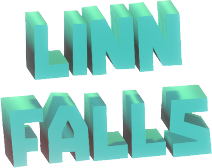
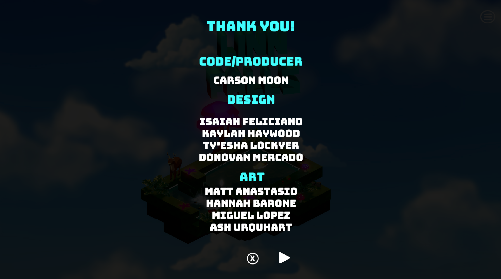

Casual puzzle game with relaxing vibes.

Team Azure (9 people)
August 2023 - December 2023
Producer and Programmer
Unity
Linn Falls was the first project that I produced and I was also the only programmer on the team. I dealt with all core aspects of the game including the puzzle mechanics, puzzle designs, UI interactions, camera interactions, and most importantly, the procedural water system.
Showcase of all mechanics.
Showcase of in-game water system.
Showcase of Nighttime mode.
Linn Falls will always hold a very special place in my heart because it was the first project that I was in charge of. I'm sure the team would agree that there were rough patches in how I navigated ClickUp and meetings, but we all have to start somewhere. Importantly, I learned how to listen and absorb each member's ideas and wants for the project. We ran into a few technical issues (mainly with the water shader and water flow algorithm), but through determination (and late nights) we were able to find solutions as a team and push forward.
